1036C14 CAMSHAFT IN CYLINDER HEAD - R R WITH HEAD REMOVED
- Path
- Procedures > 10 ENGINE UNIT > 1036 TIMING SYSTEM > 1036L CAMSHAFT (2) IN TOP HEAD (1) > 1036C14 CAMSHAFT IN CYLINDER HEAD - R R WITH HEAD REMOVED
- Kind
- repair procedure (removal / refitting; the operation number is the code)
- Applies to
- engines: 1.9 JTD 16V; all production periods
- Interactive page
- https://sloeber94.github.io/elrnDB-aGt/en/#/125000995
Applies to: engines: 1.9 JTD 16V; all production periods
 Removing
Removing
 Refitting
Refitting1. Position the upper cylinder head (1a) in the vice using the tool (1b).
 | Name | Country |
|---|---|---|
1b | Mount | 1.860.470.001 |
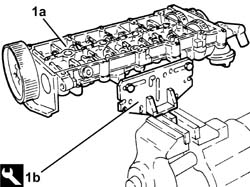
Applies to: engines: 1.9 JTD 16V; all production periods
1. Undo the bolts (1a) and remove the engine oil filler (1b).
2. Remove the gasket.
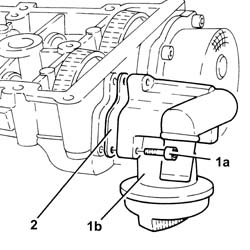
Applies to: engines: 1.9 JTD 16V; all production periods
1. Undo bolts (1a) and remove vacuum unit (1b).
2. Remove the gasket.
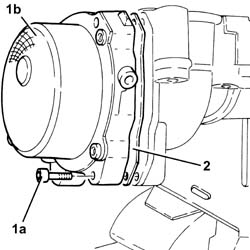
Applies to: engines: 1.9 JTD 16V; all production periods
1. Undo the bolts (1a) and remove the cam angle sensor (1b).
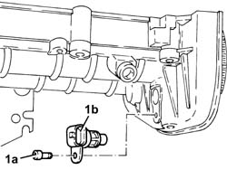
Applies to: engines: 1.9 JTD 16V; all production periods
Check that the end float of the camshaft is within the recommended values using a dial gauge.
If the end float of the camshaft is not within the recommended values, when reassembling the cylinder head, replace the worn components.
1. Remove the plugs (1a) and fit the camshaft timing tools (1b) in the upper cylinder head.
| Name | Country |
|---|---|---|
1b | Gauge | 1.870.896.900 |
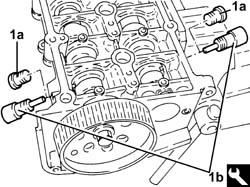
Applies to: engines: 1.9 JTD 16V; all production periods
1. Undo the camshaft sprocket fixing bolts.
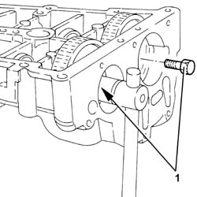
Applies to: engines: 1.9 JTD 16V; all production periods
1. Undo the bolt (1a) and remove the exhaust side camshaft toothed drive pulley (1b).
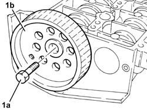
Applies to: engines: 1.9 JTD 16V; all production periods
Remove the camshaft timing tools from the camshaft housing.
| Name | Country |
|---|---|---|
- | Gauge | 1.870.896.900 |
1. Release the camshafts (1a) as necessary and remove the camshaft sprockets (1b).
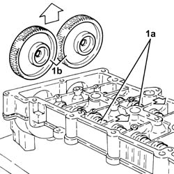
Applies to: engines: 1.9 JTD 16V; all production periods
1. Using a suitable drift, extract the inlet side camshaft (1a) and the plug (1b).
2. Using a suitable drift, extract the exhaust side camshaft (2a) and the oil seal (2b).
Remove the exhaust side camshaft oil seal.
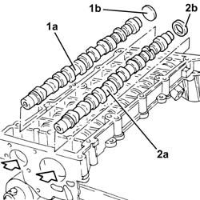
Applies to: engines: 1.9 JTD 16V; all production periods
Refitting
RemovingPlace the camshafts back in their housings.
Place the camshaft gears back in their housings and secure them without tightening the bolts.
1. Fit the camshaft timing tools.
| Name | Country |
|---|---|---|
1 | Gauge | 1.870.896.900 |
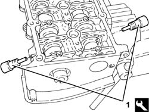
Applies to: engines: 1.9 JTD 16V; all production periods
1. Tighten the camshaft sprocket fixing bolts to the recommended torque.
 | Fastening | Component | Ø | Value (daNm) |
|---|---|---|---|---|
- | - | - | - | - |
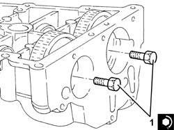
Applies to: engines: 1.9 JTD 16V; all production periods
1. Fit the front camshaft oil seal, exhaust side (1a) using the tool (1b).
| Name | Country |
|---|---|---|
1b | Fitting tool | 1.870.896.800 |
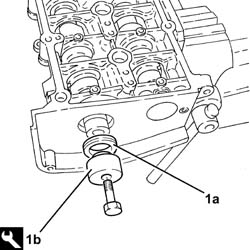
Applies to: engines: 1.9 JTD 16V; all production periods
Fit the inlet side camshaft plug.
Fit the exhaust side timing drive pulley and fix it with the bolt without tightening it.
1. Place the cam angle sensor (1a) back in its housing and secure it tightening the bolt (1b) to the recommended torque.
| Fastening | Component | Ø | Value (daNm) |
|---|---|---|---|---|
1b | - | - | - | - |
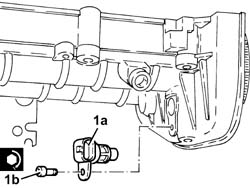
Applies to: engines: 1.9 JTD 16V; all production periods
1. Place the vacuum unit (1a), complete with gasket (1b), back in its housing and secure it tightening the bolts (1c) to the recommended torque.
| Fastening | Component | Ø | Value (daNm) |
|---|---|---|---|---|
1c | - | - | - | - |
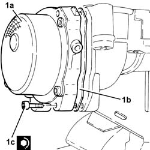
Applies to: engines: 1.9 JTD 16V; all production periods
1. Place the engine oil filler (1a), complete with gasket (1b), back in its housing and secure it tightening the bolts (1c) to the recommended torque.
| Fastening | Component | Ø | Value (daNm) |
|---|---|---|---|---|
- | - | - | - | - |
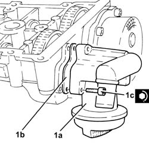
Applies to: engines: 1.9 JTD 16V; all production periods
Remove the support tool, complete with upper cylinder head from the vice and separate them.